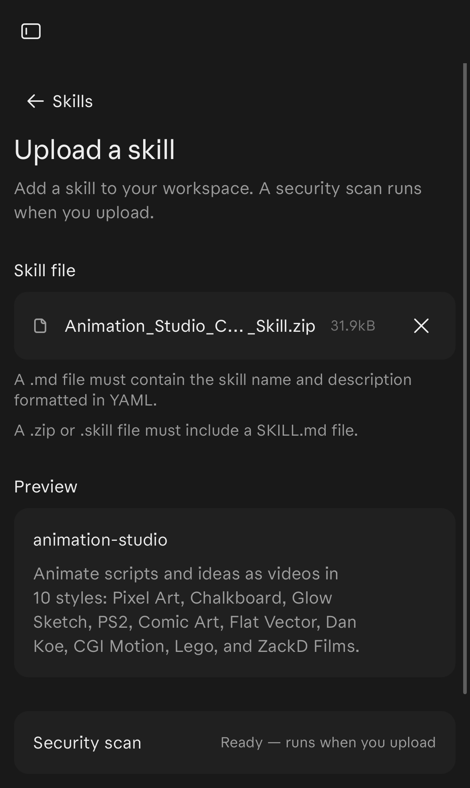
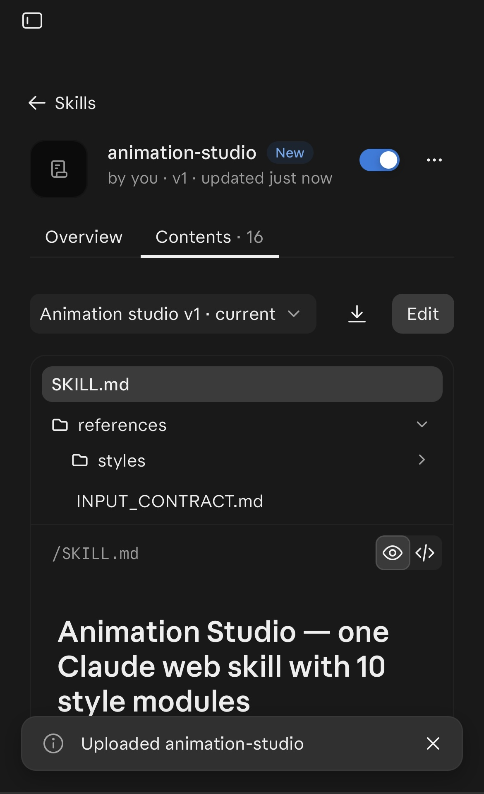
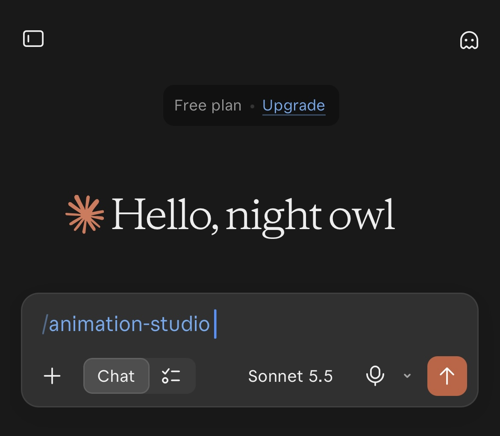
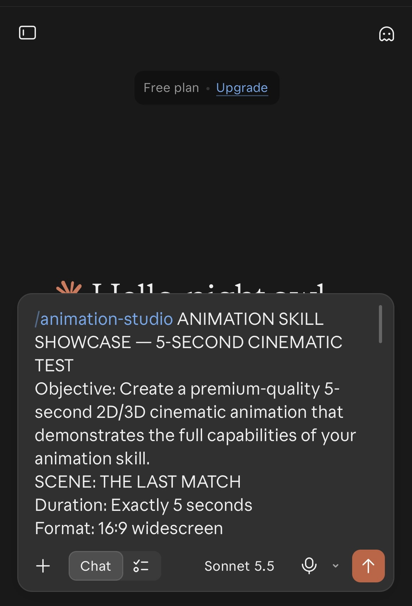

01
One installable Claude skill
A ZIP package containing the Animation Studio skill and its supporting files. The skill appears in your Claude workspace after a successful upload.
Animation Studio is a structured animation workflow for Claude. Choose a visual direction, develop your scenes, and guide the production process with one skill and ten style modules.
A downloadable Claude skill package designed to organize animation requests into a more deliberate, repeatable workflow.
A ZIP package containing the Animation Studio skill and its supporting files. The skill appears in your Claude workspace after a successful upload.
Ten distinct visual directions to help shape the look and feel of an animation project, from pixel art to CGI motion.
Use the skill to organize scripts, scene direction, visual consistency, movement, captions, sound and delivery requirements.
Follow the illustrated Claude setup guide, then invoke the skill and provide a clear production brief.
Choose a visual language that fits the subject. The exact result still depends on the brief, references and tools used during production.
Retro pixel-based scenes, characters and environments.
Hand-drawn, classroom-inspired diagrams and storytelling.
Neon-line illustrations and luminous sketch aesthetics.
Low-poly, early-console-inspired 3D visual direction.
Bold outlines, expressive poses and graphic-panel energy.
Clean shapes, simplified forms and clear visual explanations.
Minimal, editorial-style visual storytelling direction.
Polished computer-generated imagery and motion-led scenes.
Brick-built characters, props and miniature environments.
Fast, explanatory 3D-style visual storytelling direction.
These steps follow the Claude interface shown in the supplied screenshots. Menu labels and availability may vary as Claude updates its interface.

Tap the sidebar/menu icon in Claude to open the workspace navigation.

From the navigation menu, select Customize.

Open the Skills tab. Switch to the area where your workspace skills are managed.

Tap Add, then choose Upload skill from the menu.

Find the Animation Studio ZIP file in Files and select it. Keep the ZIP intact; do not extract it unless the current Claude upload instructions ask you to.

Check that the preview identifies animation-studio, then complete the upload.

Look for animation-studio in your skills list and make sure its toggle is on.

In a Claude chat, type /animation-studio and select the skill if Claude offers it.

Give Claude your topic, script, audio, target format, visual style and production requirements. Attach reference files when relevant.
A vague request produces vague direction. A useful animation prompt defines the story, assets, visual rules, timing and what counts as a finished deliverable.
PROJECT: [VIDEO TITLE] OBJECTIVE: Create a complete animated video about [TOPIC] for [AUDIENCE]. INPUTS PROVIDED: - Final script: [ATTACHED / PASTE BELOW] - Voiceover: [ATTACHED AUDIO / NOT PROVIDED] - Visual references: [ATTACHED FILES] SOURCE OF TRUTH: Use [AUDIO / SCRIPT] for timing and wording. Do not invent missing content. VIDEO SPECIFICATIONS: - Platform and aspect ratio: [e.g. Reels / 9:16] - Resolution: [e.g. 1080 × 1920] - Frame rate: [e.g. 30 FPS] - Export format: [e.g. MP4] - Duration: [match supplied voiceover] VISUAL DIRECTION: - Style: [choose one of the 10 modules] - Palette and character rules: [DETAILS] - Must include: [DETAILS] - Must avoid: [DETAILS] SCENE PLAN: For each narration beat, specify the visual action, camera composition, movement, transition and approximate timing. Keep scenes consistent and purposeful. CAPTIONS & AUDIO: Use accurate, synchronized captions. Define typography and highlighted terms. Keep supplied narration primary; specify music mood, sound effects and mixing priorities. QUALITY CONTROL: Check continuity, motion, timing, captions, audio balance, visual errors and export settings. Do not claim a finished render if the environment cannot create one. FINAL DELIVERABLE: [Describe the exact file(s) you expect. If a complete render is not possible, state the limitation and provide the most useful production-ready output.]
This is the Galloping Gertie example: a historical animated explainer brief with scene direction, captions, sound design, music, editing and quality checks.
# MASTER PRODUCTION PROMPT ## GALLOPING GERTIE — PROFESSIONAL 2D ANIMATED STORYTELLING SHORT I am providing you with a completed voiceover audio file and its corresponding script. Your task is to create a complete, professionally edited, highly engaging 2D animated storytelling video using the supplied audio. This is intended for YouTube Shorts, Instagram Reels and TikTok. I do NOT want a basic slideshow, static illustrations with zoom effects, or a collection of unrelated AI-generated clips. I want a visually engaging animated story with smooth animation, expressive visuals, professional captions, cinematic background music, carefully synchronized sound effects and excellent editing. The final result should feel like a professionally produced animated documentary compressed into a short-form video. Follow every instruction below. --- # 1. VIDEO SPECIFICATIONS - Format: Vertical 9:16. - Resolution: 1080 × 1920. - Frame rate: 30 FPS. - Export format: MP4. - Video duration: Match the complete supplied voiceover audio exactly. - Platform: YouTube Shorts, Instagram Reels and TikTok. - Maintain appropriate mobile-safe margins for captions and important visual elements. IMPORTANT: The voiceover determines the duration of the video. Do not shorten, remove, rewrite or cut off any part of the narration to fit a preferred video length. The final video must include the complete voiceover from beginning to end. --- # 2. VISUAL STYLE — FOLLOW STRICTLY Use a clean, professional 2D animated storytelling style inspired by educational animated story videos. The visual direction should include: - Clean cartoon illustrations. - Bold and consistent outlines. - Flat colours with subtle shading. - Expressive characters. - Detailed but uncluttered environments. - Smooth character and object movement. - Consistent proportions and visual design. - Interesting camera compositions. - Carefully animated environmental details. DO NOT USE: - Photorealistic 3D animation. - Anime aesthetics. - Zombie or horror aesthetics. - Random stock footage. - Unrelated AI-generated video clips. - Static images with only zoom effects. - Excessive transitions. - Unnecessary cinematic effects that distract from the story. Maintain the same illustration style, colour palette, character designs and overall visual identity throughout the entire video. --- # 3. COMPLETE VOICEOVER SCRIPT Use the supplied audio as the authoritative source for timing, pronunciation, pauses and delivery. Use the written script to understand the story and plan the corresponding scenes and captions. Do not rewrite or shorten it. [ curious ] This bridge started dancing in winds as light as four miles per hour. [ slight pause ] [ storytelling ] In 1940, a brand-new suspension bridge opened in Washington, USA. People called it... Galloping Gertie. And you'll understand why. [ playful curiosity ] Whenever the wind blew, the entire roadway began bouncing up and down. Cars literally moved like they were riding waves. [ serious ] Engineers knew something was wrong. They installed hydraulic shock absorbers and additional cables to control the movement. But the problem wasn't solved. [ dramatic ] Then, on November seventh, 1940... everything changed. The bridge suddenly began twisting violently from side to side. [ slower, tense ] The roadway tilted almost forty-five degrees. Steel beams twisted. Concrete broke apart. And the entire structure began tearing itself apart. [ short pause ] [ serious ] Just four months after opening, Galloping Gertie collapsed into the water. [ thoughtful ] But here's the fascinating part. The wind wasn't simply pushing the bridge. Its flexible structure and the airflow interacted, creating a destructive twisting motion known as torsional flutter. [ confident ] The disaster changed how engineers studied wind and designed suspension bridges. [ slight pause ] [ emphatic ] Because sometimes... the greatest threat to a massive structure is something you can't even see. [ softly ] The wind. IMPORTANT: The supplied voiceover audio takes priority over the written script if there are any differences in timing or delivery. Do not generate a replacement voice. Do not add narration that is not present in the supplied audio. --- # 4. SCENE-BY-SCENE ANIMATION DIRECTION Use the actual voiceover to determine scene timing. These are creative directions. Adjust the scene lengths to match the narration naturally. ## SCENE 1 — THE HOOK Narration: "This bridge started dancing in winds as light as four miles per hour." Visuals: Start immediately with the bridge twisting dramatically. Show the suspension bridge moving violently; make the roadway visibly twist from side to side; show vehicles struggling to remain on the roadway; add moving water underneath; show wind affecting the environment; use a dramatic camera push-in towards the bridge. Editing: Open with immediate visual action. Add a subtle cinematic impact. Use a short, powerful wind sound. Make the first second visually surprising. Do not start with a logo, title screen or slow introduction. ## SCENE 2 — THE INTRODUCTION Narration: "In 1940, a brand-new suspension bridge opened in Washington, USA." Visuals: Reveal the full suspension bridge stretching across the water; establish the historical 1940 setting; show period-appropriate vehicles travelling across the bridge; use a wide establishing shot followed by a closer tracking shot. Add a small, tasteful date label: "1940". ## SCENE 3 — GALLOPING GERTIE Narration: "People called it... Galloping Gertie. And you'll understand why." Visuals: Show the bridge bouncing vertically; make the roadway visibly rise and fall; show cars moving up and down with the roadway; use a side view to make the movement easy to understand; make the animation slightly surprising and memorable. Add a small visual title: "GALLOPING GERTIE". ## SCENE 4 — THE BOUNCING BRIDGE Narration: "Whenever the wind blew, the entire roadway began bouncing up and down. Cars literally moved like they were riding waves." Visuals: Show gusts of wind passing across the bridge; animate the roadway moving like a wave; show vehicles responding to the movement; use a combination of wide shots and close-ups; make the movement smooth and understandable. ## SCENE 5 — THE ENGINEERS Narration: "Engineers knew something was wrong. They installed hydraulic shock absorbers and additional cables to control the movement. But the problem wasn't solved." Visuals: Introduce engineers examining the bridge; show inspection of structural components; show hydraulic shock absorbers being installed; show additional cables being attached; use close-ups of tools, mechanical components and cables; show the bridge continuing to move despite these efforts. The engineering details should look coherent and period-appropriate. ## SCENE 6 — THE DAY EVERYTHING CHANGED Narration: "Then, on November seventh, 1940... everything changed." Visuals: Introduce a date label: "NOVEMBER 7, 1940"; gradually darken the atmosphere without making it horror-themed; show the bridge beginning to move unpredictably; build tension through camera movement and sound design. ## SCENE 7 — THE TWISTING Narration: "The bridge suddenly began twisting violently from side to side." Visuals: Show the bridge twisting along its length; use a wide angle to show the entire structure; follow with close-ups of the roadway and suspension components; make the movement progressively more violent; show cables becoming visibly strained. The audience must clearly understand that the bridge is twisting, not simply bouncing. ## SCENE 8 — THE COLLAPSE Narration: "The roadway tilted almost forty-five degrees. Steel beams twisted. Concrete broke apart. And the entire structure began tearing itself apart." Visuals: Show the roadway tilting dramatically; depict the approximate forty-five-degree angle described in the narration; show structural components bending and breaking; animate falling debris; show the bridge structure progressively failing; use dramatic camera angles and controlled camera shake; show debris falling into the water. This should be the visual climax. Do not make the collapse look cartoonishly funny. ## SCENE 9 — THE AFTERMATH Narration: "Just four months after opening, Galloping Gertie collapsed into the water." Visuals: Show the damaged bridge structure; show debris in the water; use a wide shot to establish the scale of the destruction; let the camera move slowly through the aftermath. Allow the narration to carry the emotional weight. ## SCENE 10 — THE SCIENTIFIC EXPLANATION Narration: "But here's the fascinating part. The wind wasn't simply pushing the bridge. Its flexible structure and the airflow interacted, creating a destructive twisting motion known as torsional flutter." Visuals: Transition from the damaged bridge to a clean educational diagram; show wind flowing around the bridge; use directional arrows to represent airflow; show the bridge structure responding to the airflow; visually demonstrate the twisting movement; use a simple comparison between vertical bouncing and twisting motion; highlight the term "TORSIONAL FLUTTER". Make the scientific explanation visually simple enough for someone with no engineering background to understand. Do not overload the screen with technical diagrams. ## SCENE 11 — THE LESSON Narration: "The disaster changed how engineers studied wind and designed suspension bridges." Visuals: Show engineers studying bridge designs; show simplified engineering diagrams; transition to a modern suspension bridge; use a subtle visual comparison between the old and modern engineering approaches. Keep this section informative and visually satisfying. ## SCENE 12 — THE FINAL PAYOFF Narration: "Because sometimes... the greatest threat to a massive structure is something you can't even see. The wind." Visuals: Show the bridge or its remains in a wide cinematic composition; show wind moving across the water; slowly reveal the invisible force through subtle animated airflow lines; finish on a memorable image that reinforces the final words. The final visual should land exactly with the last spoken word. Do not add a long outro, unnecessary logo animation or additional narration. --- # 5. ANIMATION QUALITY AND MOVEMENT The animation must feel alive. Pay special attention to smooth bridge movement; believable suspension cable movement; moving vehicles; wind affecting the environment; animated water; natural character movement; expressive character reactions; falling debris; structural bending and breaking; smooth camera pans and tracking shots; dynamic close-ups and wide shots; natural transitions between scenes. Avoid repetitive camera angles. Avoid reusing the same animation repeatedly. Do not use static images as a substitute for actual movement. Where full character animation is not necessary, use meaningful environmental animation, camera movement and object movement. Every scene should have a clear visual purpose. --- # 6. CAPTIONS AND HIGHLIGHTED KEYWORDS Generate accurate English subtitles synchronized to the actual voiceover. Visual style: bold, modern typography; white primary text; bright yellow or electric-orange highlights; clean, professional appearance; subtle pop-in animations; consistent positioning; high readability on mobile screens. Highlight important words when they are spoken. Examples: FOUR MILES PER HOUR; 1940; GALLOPING GERTIE; BOUNCING; ENGINEERS; NOVEMBER 7TH; TWISTING; FORTY-FIVE DEGREES; COLLAPSED; TORSIONAL FLUTTER; THE WIND. Caption rules: Do not highlight every word. Highlight only meaningful words and phrases. Use word-by-word emphasis selectively. Break longer sentences into readable chunks. Never display too much text at once. Do not cover important characters or animation. Keep captions within mobile-safe margins. Match every caption to the actual spoken audio. Proofread all captions. Make the captions feel professionally edited into the video, not like basic automatically generated subtitles. --- # 7. BACKGROUND MUSIC Select a suitable cinematic background track that creates curiosity and maintains audience interest. Opening: mysterious, curious and slightly suspenseful. Introduction: subtle storytelling music that establishes the atmosphere. Bridge movement: gradually introduce tension. Engineers: keep the music controlled and curious. Collapse: build into a dramatic cinematic moment. Scientific explanation: reduce the intensity and create room for the narration. Ending: finish with a thoughtful, slightly mysterious atmosphere. Music requirements: use royalty-free or properly licensed music; avoid generic corporate music; avoid overly cheerful music; avoid music that competes with the narration; use smooth volume automation; lower the music beneath important narration; make transitions between musical sections natural. The music should support the story, not become the main attraction. --- # 8. SOUND EFFECTS Add professional sound effects synchronized with the animation. Opening: strong wind gust; low cinematic impact; subtle structural creaking. Bridge movement: metal groaning; cable tension; wind blowing; subtle vehicle movement. Engineers: mechanical clicks; tool sounds; metal installation sounds. Twisting: increasing structural creaking; metal bending; cable strain; wind intensifying. Collapse: metal cracking; structural impacts; falling debris; deep cinematic impact; large water splashes. Scientific explanation: soft airflow; subtle whooshes for diagrams; light mechanical sounds. Ending: gentle wind ambience; subtle cinematic finish. Do not use sound effects randomly. Every sound should have a corresponding visual action or storytelling purpose. Avoid excessive sound effects. --- # 9. VOICEOVER AND AUDIO MIXING The supplied voiceover must remain the primary audio element. Do not replace the voice. Do not rewrite the narration. Do not artificially speed up the voice. You may use subtle professional audio processing if needed, such as gentle equalization, light compression, noise reduction if necessary, consistent loudness and smooth audio transitions. Preserve the natural character of the narrator's voice. Match the visual intensity to the narration: curious narration = interesting visual reveals; storytelling narration = smooth chronological animation; serious narration = controlled and informative visuals; dramatic narration = stronger animation and sound effects; thoughtful narration = slower, cleaner visual pacing; final narration = memorable visual payoff. Keep background music and sound effects below the voiceover. Use audio ducking wherever necessary. The narration must always remain easy to understand. --- # 10. EDITING AND AUDIENCE RETENTION The first two seconds are extremely important. The opening must immediately give viewers a reason to stop scrolling. Use immediate visual action; strong opening composition; fast but controlled editing; frequent meaningful visual changes; interesting camera angles; visual reveals; suspenseful pauses; dramatic escalation; a satisfying ending. Avoid long empty shots; unnecessary introductions; repetitive visuals; random transitions; unnecessary text; overused camera shake; excessive zooming; effects that distract from the story. Every scene should introduce information, create curiosity, increase tension, explain something or deliver a payoff. Do not sacrifice clarity for speed. --- # 11. HISTORICAL AND VISUAL CONSISTENCY This story is about the 1940 Tacoma Narrows Bridge collapse, also known as Galloping Gertie. Maintain consistency in bridge architecture; suspension cables; roadway structure; historical vehicles; engineering equipment; clothing and character designs; environmental details; overall colour palette. Do not randomly change the bridge's appearance between scenes. Do not invent historical events and present them as real. Keep the scientific explanation of torsional flutter visually understandable without making it misleading. --- # 12. FINAL QUALITY CONTROL Before exporting, review the entire video from beginning to end. Animation: Is the art style consistent? Are movements smooth? Does the bridge behave consistently? Are scenes visually engaging? Are there any AI-generated visual glitches? Voiceover: Is the entire audio included? Is the timing correct? Is the voice clear? Are pauses respected? Captions: Are all words accurate? Are captions synchronized? Are important words highlighted? Are captions readable on a phone? Are any captions covering important visuals? Audio: Does the music suit the story? Are sound effects synchronized? Is the narration always clear? Are audio transitions smooth? Editing: Does the opening grab attention? Does the tension build naturally? Is the collapse dramatic? Is the scientific explanation understandable? Does the ending feel complete? Fix every obvious error before exporting. --- # 13. FINAL DELIVERABLE I want the actual finished animated video. Not just a storyboard, a script, a list of prompts, a collection of images, or an unfinished timeline. Deliver the complete edited video with: 2D animation; original supplied voiceover; synchronized captions; highlighted important words; suitable background music; professional sound effects; smooth editing and transitions; vertical 9:16 formatting; high-quality MP4 export. If your current environment cannot create or export the complete video, tell me exactly what you can produce and what requires another tool. Do not pretend that a storyboard, images or an unfinished timeline is a completed video. --- # FINAL CREATIVE DIRECTION I want this video to be genuinely engaging. It should look like a high-quality animated storytelling channel, not a cheap AI-generated compilation. The animation must be smooth and visually consistent. The captions must be professionally designed. The music must create curiosity. The sound effects must make the events feel alive. The voiceover must control the pacing. The first few seconds must capture attention, the middle must keep viewers curious, the collapse must deliver a dramatic payoff, and the ending must leave viewers with something memorable. Prioritize storytelling, animation quality, synchronization, visual consistency and professional sound design. Do not sacrifice quality just to add more effects. Create the best complete video possible within your actual capabilities.
Get the Animation Studio Claude skill package, explore all ten style modules and follow the illustrated installation walkthrough.
A downloadable Claude skill package called Animation Studio, containing one skill with ten style modules and supporting guidance files.
No. It guides Claude through an animation workflow. A finished render depends on the tools, model capabilities, assets and export environment available to you.
Yes. This product is designed as a Claude web skill. You need access to a Claude workspace that supports skill upload and use.
The package is described as one Animation Studio skill with ten style modules: Pixel Art, Chalkboard, Glow Sketch, PS2, Comic Art, Flat Vector, Dan Koe, CGI Motion, Lego and ZackD Films.